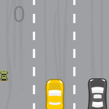
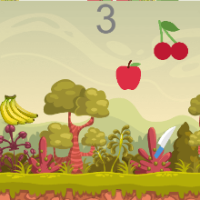
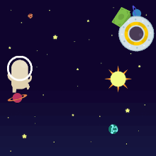

Jogo do carro que perde o controle na 28 de março e sai com o piloto automatico sem o motorista conseguir recuperar o controle

Jogo da fruta caindo na faca e se despedaçando em diversos pedaços com plateia assistindo

Jogo do astronauta que perde o controle da nave e sai vagando sem rumo pelo espaço enquanto tenta recuperar o controle